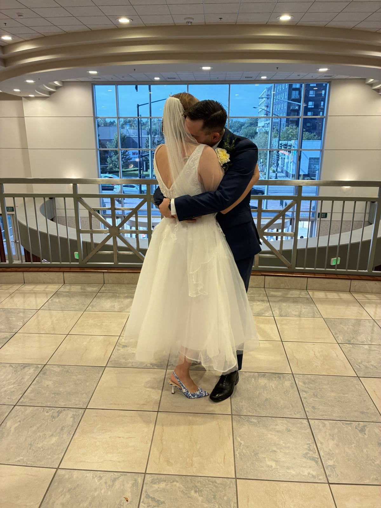
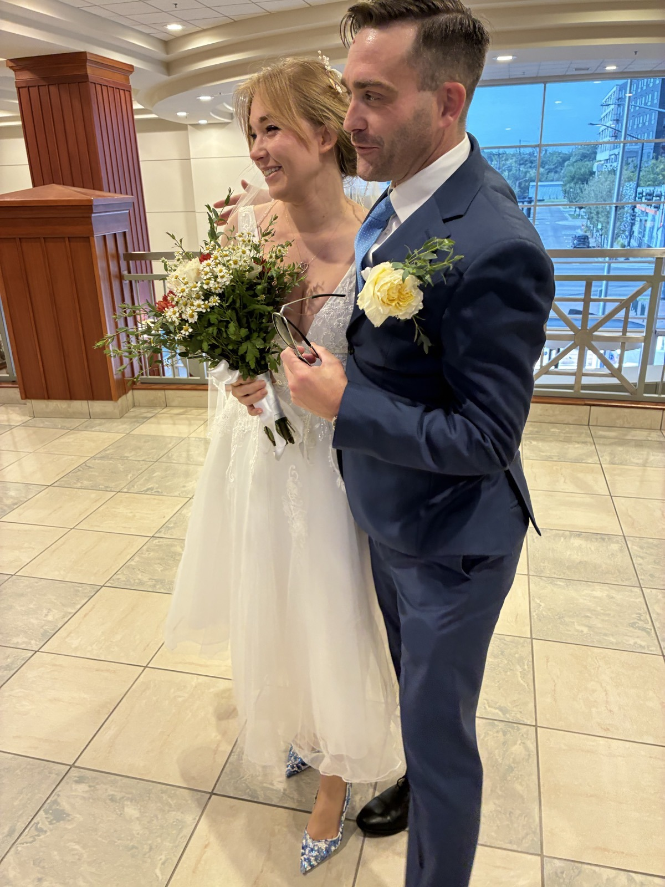
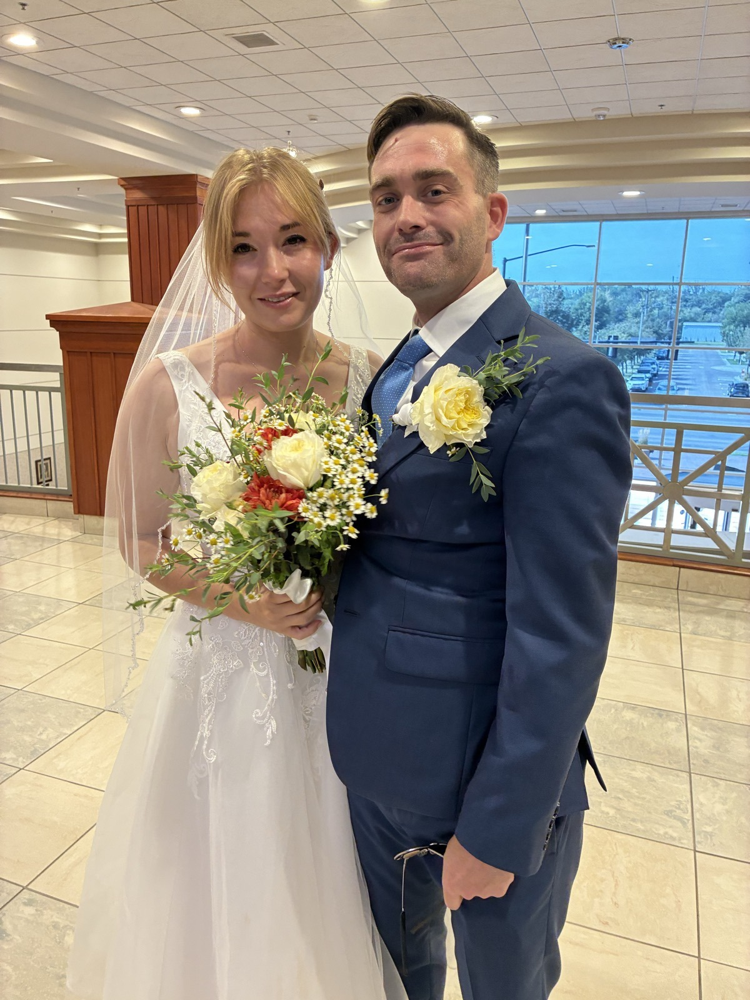

We got married
FRIDAY, AUGUST 14, 2026 · THE COURTHOUSE
Instead of a wedding, we're building a home.
On a sunny Friday morning, the two of us walked into the courthouse and got married. It took about six minutes. My mom stood with us as our witness. Stephen's dad passed this June, and we felt him with us the whole morning. We had worn our fanciest clothes, and I had found my dress only two days before. When we looked at each other and said the words, it was the easiest yes in the world.
We've been together almost five years, so marrying didn't change how we feel. It only said it out loud, and made it ours to keep.
Afterward, still dressed up with nowhere we needed to be, we walked over to Bar Gernika and worked our way through more plates of croquetas than we'd like to admit. Then we went home to our very happy pets. It was a small day, and a quiet one, and exactly the one we wanted.



We know some of you would have loved to be there, and we're a little sorry we didn't gather everyone for a big celebration. It was never about leaving anyone out. We just wanted a quiet start, the two of us, and a home to build from.
Mostly, we're looking forward to our life here in Idaho, and to filling it with the people we love. Come see us when you can. There's a place at our table, and we can't wait to fill it.
We're saving for our first home, and we haven't found it yet. Which means, honestly, we don't have room for much at the moment.
So if you'd like to give something, a little toward the down payment helps more than anything. It gets us to the front door sooner, and every bit goes straight there. We'll keep track of each gift so we can thank you properly.
For Zelle, send to erin.stanley358@gmail.com from your bank app and it lands straight in our account. Sending a card? Email us and we'll get you our address.
Totally optional, and truly no rush. We've started a small list for once we're moved in, so if a physical gift feels more like you, pick anything here and don't worry about the timing.
Really, there's no obligation at all. Having you in our lives is the gift. And we've got a kitchen now, so come for dinner. We would love to have you at our table.